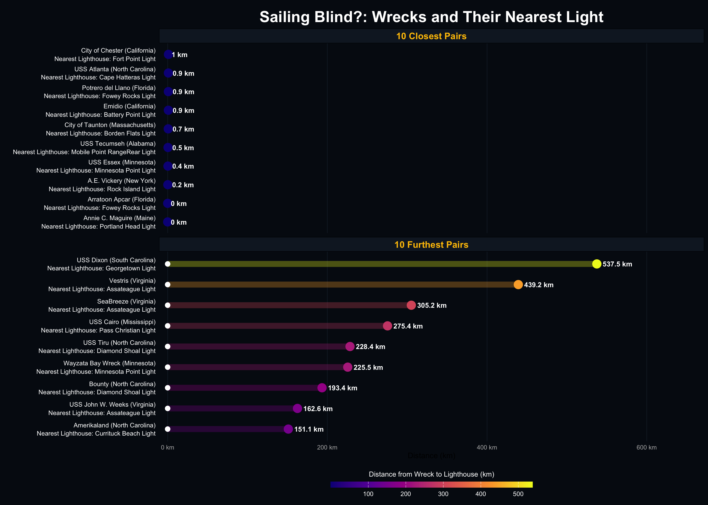

Ship Happens: Data-Driven Tales from the Deep
Shipwrecks are among the most visible traces of maritime risk. From colonial trading vessels to modern cargo ships, maritime disasters have occurred along nearly every segment of the United States coastline and within its inland waters. These events reflect a combination of environmental hazards, navigational challenges, wartime activity, and the limitations of maritime technology across different historical periods.
The Wikipedia page “List of shipwrecks of the United States” provides a consolidated record of notable wrecks across multiple states and territories. Although not an exhaustive historical registry, the page compiles standardized information such as ship name, national flag, date sunk, descriptive notes, and geographic coordinates when available. Because the page aggregates many regional shipwreck lists into a single document, it offers a useful starting point for building a reproducible dataset of maritime disasters.
# Load all required packages quietly
suppressMessages({
library(tidyverse)
library(rvest)
library(httr)
library(ggrepel)
library(viridis)
library(geosphere)
library(ggtext)
library(ggnewscale)
})The shipwreck data are contained on a single master Wikipedia page rather than split across individual state pages, but the information is stored in multiple tables, each roughly corresponding to a U.S. state or territory. To build a comprehensive dataset, we first download the master page and extract all tables with the “wikitable” class. Each table is paired with its corresponding state header to retain geographic context. We then parse each table into a structured dataframe, standardize column names, and combine all tables into a master dataset. Afterward, we ensure that essential columns exist (ship name, flag, date sunk, notes, and coordinates), clean text fields of extra whitespace, and remove occasional CSS artifacts embedded in the coordinates column.
# ---- 1. Function to scrape tables with dates and coordinates ----
scrape_shipwreck_tables <- function(url, source_state = NA) {
page <- tryCatch({
GET(url, user_agent("Mozilla/5.0")) %>% read_html()
}, error = function(e) return(NULL))
if (is.null(page)) return(NULL)
tables <- page %>% html_elements("table.wikitable")
if (length(tables) == 0) return(NULL)
page_data <- map_df(seq_along(tables), ~{
header_node <- tables[.x] %>% html_element(xpath = "preceding::h2[1] | preceding::h3[1]")
current_state <- if(!is.na(source_state)) source_state else {
header_node %>% html_text() %>% str_remove("\\[edit\\]") %>% str_trim()
}
rows <- tables[.x] %>% html_elements("tr")
if (length(rows) <= 1) return(NULL)
map_df(rows[-1], ~{
cells <- .x %>% html_elements("td")
if (length(cells) < 5) return(NULL)
coord_cell <- cells[5]
lat_long <- coord_cell %>% html_element(".geo-dec") %>% html_text()
if (is.na(lat_long) || lat_long == "") return(NULL)
coords <- str_split(lat_long, "[\\s\\|]+", simplify = TRUE)
tibble(
state = current_state,
ship = cells[1] %>% html_text2() %>% str_squish(),
sunk_date = cells[3] %>% html_text2() %>% str_squish(),
latitude_raw = coords[1],
longitude_raw = coords[2]
)
})
})
return(page_data)
}
# ---- 2. Identify sub-links from main page ----
base_url <- "https://en.wikipedia.org/wiki/List_of_shipwrecks_of_the_United_States"
main_page <- GET(base_url, user_agent("Mozilla/5.0")) %>% read_html()
hatnotes <- main_page %>% html_elements(".hatnote a")
sub_links <- hatnotes %>% html_attr("href") %>%
keep(~str_detect(.x, "List_of_shipwrecks_of_")) %>%
map_chr(~paste0("https://en.wikipedia.org", .x))
sub_link_states <- hatnotes %>%
keep(~str_detect(html_attr(.x, "href"), "List_of_shipwrecks_of_")) %>%
map_chr(~{
res <- .x %>% html_element(xpath = "ancestor::div[1]/preceding::h2[1]") %>% html_text()
str_remove(res, "\\[edit\\]") %>% str_trim()
})
# ---- 3. Multi-page execution ----
main_results <- scrape_shipwreck_tables(base_url)
sub_results <- tibble()
if(length(sub_links) > 0) {
sub_results <- map2_df(sub_links, sub_link_states, ~{
message(paste("Scraping sub-page for:", .y))
scrape_shipwreck_tables(.x, source_state = .y)
})
}## Scraping sub-page for: California## Scraping sub-page for: Florida## Scraping sub-page for: Massachusetts## Scraping sub-page for: North Carolina# ---- 4. Final cleaning ----
shipwrecks_clean <- bind_rows(main_results, sub_results) %>%
mutate(
lat_num = as.numeric(str_extract(latitude_raw, "[0-9.]+")),
lat_dir = str_extract(latitude_raw, "[NS]"),
long_num = as.numeric(str_extract(longitude_raw, "[0-9.]+")),
long_dir = str_extract(longitude_raw, "[EW]"),
latitude = ifelse(!is.na(lat_dir) & lat_dir == "S", -lat_num, lat_num),
longitude = ifelse(!is.na(long_dir) & long_dir == "W", -long_num, long_num)
) %>%
filter(!is.na(latitude)) %>%
select(state, ship, sunk_date, latitude, longitude)
# Preview results
print(paste("Total shipwrecks captured:", nrow(shipwrecks_clean)))## [1] "Total shipwrecks captured: 315"head(shipwrecks_clean)## # A tibble: 6 × 5
## state ship sunk_date latitude longitude
## <chr> <chr> <chr> <dbl> <dbl>
## 1 Alabama Eliza Battle 1 March 1858 32.2 -88.0
## 2 Alabama CSS Huntsville 12 April 1865 30.8 -88.0
## 3 Alabama USS Philippi 5 August 1864 30.4 -88.0
## 4 Alabama CSS Phoenix 7 August 1864 30.6 -88.0
## 5 Alabama USS Tecumseh 5 August 1864 30.2 -88.0
## 6 Alabama CSS Tuscaloosa 12 April 1865 30.8 -88.0Shipwrecks rarely occur in isolation from navigational infrastructure. Lighthouses, buoys, and other coastal aids to navigation were historically constructed to reduce maritime hazards and guide vessels through dangerous waters. Because this project exists within a broader data portfolio, we can incorporate the lighthouse dataset generated in the previous analysis “Data on the Rocks: Touring U.S. Lighthouses”
Rather than rerunning the entire lighthouse scraping pipeline, the cleaned lighthouse dataset was saved as a local .RDS file. This file preserves the dataset exactly as it was produced - including column types and spatial coordinates - and allows it to be loaded instantly here.
# Load previously saved lighthouse dataset
lighthouses_clean <- readRDS("data/lighthouses_clean.rds")Sailing Blind?: Wrecks and Their Nearest Light
With both shipwreck and lighthouse datasets available, we can begin exploring their spatial relationship. One intuitive question is whether shipwrecks tend to occur near existing navigational aids or in areas where lighthouses are sparse. To explore this, we calculate the geographic distance between each recorded shipwreck and the nearest lighthouse located within the same state. While many wrecks are attributed to specific states based on their proximity to the shoreline, “high seas” wrecks lost far from land are typically attributed to states based on their port of origin, intended destination, or the nearest naval base.
Because both datasets contain latitude and longitude coordinates, we treat them as spatial point datasets. Using great-circle distance calculations - which account for the curvature of the Earth - we compute the distance from every shipwreck location to lighthouse locations within its respective state to identify the nearest one. Limiting this search by state helps ensure the analysis reflects the relationship between local maritime disasters and the regional infrastructure intended to mitigate them.
# ---- 1. Clean lighthouse data ----
lighthouses_valid <- lighthouses_clean %>%
select(state, lon, lat, name, year_first_lit) %>%
drop_na(lon, lat, year_first_lit, state) %>%
mutate(
lon = as.numeric(lon),
lat = as.numeric(lat),
year_first_lit = as.numeric(str_extract(year_first_lit, "\\d{4}")),
state = str_trim(state)
)
# ---- 2. Extract sunk_year for all shipwrecks ----
shipwrecks_clean <- shipwrecks_clean %>%
mutate(
sunk_year = as.numeric(str_extract(sunk_date, "\\d{4}")),
longitude = as.numeric(longitude),
latitude = as.numeric(latitude),
state = str_trim(state)
)
# ---- 3. Regional calculation ----
shipwrecks_with_data <- map_df(unique(shipwrecks_clean$state), function(s) {
s_wrecks <- shipwrecks_clean %>% filter(state == s, !is.na(latitude))
s_lights <- lighthouses_valid %>% filter(state == s)
# If no lighthouses found in this state, create empty columns
if(nrow(s_lights) == 0) {
return(s_wrecks %>% mutate(
nearest_lighthouse_km = NA_real_,
nearest_lighthouse_name = NA_character_,
nearest_lighthouse_year_lit = NA_real_,
light_lon = NA_real_,
light_lat = NA_real_,
lighthouse_active = NA
))
}
if(nrow(s_wrecks) == 0) return(NULL)
w_mat <- as.matrix(s_wrecks %>% select(longitude, latitude))
l_mat <- as.matrix(s_lights %>% select(lon, lat))
dist_matrix <- geosphere::distm(w_mat, l_mat)
nearest_idx <- apply(dist_matrix, 1, which.min)
s_wrecks %>%
mutate(
nearest_lighthouse_km = apply(dist_matrix, 1, min) / 1000,
nearest_lighthouse_name = s_lights$name[nearest_idx],
nearest_lighthouse_year_lit = s_lights$year_first_lit[nearest_idx],
light_lon = s_lights$lon[nearest_idx],
light_lat = s_lights$lat[nearest_idx],
lighthouse_active = sunk_year >= nearest_lighthouse_year_lit
)
})
shipwrecks_clean <- shipwrecks_with_data
# ---- 4. Preview ----
shipwrecks_clean %>%
filter(lighthouse_active == TRUE) %>%
select(ship, state, sunk_year, nearest_lighthouse_name, nearest_lighthouse_km) %>%
arrange(nearest_lighthouse_km) %>%
head(20)## # A tibble: 20 × 5
## ship state sunk_year nearest_lighthouse_n…¹ nearest_lighthouse_km
## <chr> <chr> <dbl> <chr> <dbl>
## 1 Annie C. Maguire Maine 1886 Portland Head Light 0.0309
## 2 Arratoon Apcar Flor… 1878 Fowey Rocks Light 0.0385
## 3 A.E. Vickery New … 1889 Rock Island Light 0.223
## 4 USS Essex Minn… 1931 Minnesota Point Light 0.372
## 5 USS Tecumseh Alab… 1864 Mobile Point RangeRea… 0.457
## 6 City of Taunton Mass… 1930 Borden Flats Light 0.724
## 7 Emidio Cali… 1941 Battery Point Light 0.895
## 8 Potrero del Lla… Flor… 1942 Fowey Rocks Light 0.906
## 9 USS Atlanta Nort… 1869 Cape Hatteras Light 0.923
## 10 City of Chester Cali… 1888 Fort Point Light 1.01
## 11 Herman Winter Mass… 1944 Gay Head Light 1.03
## 12 Carthaginian II Hawa… 2005 Lahaina Light 1.11
## 13 USS Keokuk Sout… 1863 Morris Island Light 1.12
## 14 Essayons Minn… 2009 Duluth South Breakwat… 1.17
## 15 City of Salisbu… Mass… 1938 The Graves Light 1.26
## 16 Chelsea Mass… 1957 Cape Ann Light Statio… 1.29
## 17 Thomas Wilson Minn… 1902 Duluth South Breakwat… 1.43
## 18 Home Nort… 1837 Cape Hatteras Light 1.43
## 19 Ada K. Damon Mass… 1909 Ipswich Rear Range Li… 1.51
## 20 Dixie Sword Mass… 1942 Monomoy Point Light 1.54
## # ℹ abbreviated name: ¹nearest_lighthouse_nameWhile the full dataset contains hundreds of wreck–lighthouse distance calculations, interpreting the overall distribution from raw numbers alone can be difficult. To highlight the most extreme spatial relationships, the code first filters the dataset to coastal and Great Lakes states where lighthouse infrastructure is most relevant. Importantly, only shipwrecks that occurred after the nearest lighthouse was built are included - wrecks predating a lighthouse are excluded, since pairing them with a not-yet-existent navigational aid would be meaningless. The remaining shipwrecks are ranked by their calculated distance to the nearest lighthouse, and the ten closest and ten most distant pairs are extracted. These twenty observations are then visualized in a dumbbell-style plot, where each row connects a shipwreck to its nearest lighthouse within the same state.
# ---- 1. Define coastal & Great Lakes states ----
coastal_gl_states <- c(
"Alabama", "Alaska", "California", "Connecticut", "Delaware", "Florida",
"Georgia", "Hawaii", "Louisiana", "Maine", "Maryland", "Massachusetts",
"Mississippi", "New Hampshire", "New Jersey", "New York", "North Carolina",
"Oregon", "Rhode Island", "South Carolina", "Texas", "Virginia", "Washington",
"Illinois", "Indiana", "Michigan", "Minnesota", "Ohio", "Pennsylvania", "Wisconsin"
)
# ---- 2. Filter and process ----
plot_ready_data <- shipwrecks_clean %>%
filter(state %in% coastal_gl_states) %>%
filter(!(ship == "Oregon" & state == "New Hampshire")) %>%
filter(!is.na(nearest_lighthouse_km)) %>%
filter(lighthouse_active == TRUE) %>% # <-- Exclude wrecks predating nearest lighthouse
mutate(
ship_label = paste0(ship, " (", state, ")\nNearest Lighthouse: ", nearest_lighthouse_name)
)
# ---- 3. Slicing function (Top 10 Near & Top 10 Far) ----
get_extremes <- function(df) {
df_sorted <- df %>% arrange(nearest_lighthouse_km)
# Extract the extremes
near <- head(df_sorted, 10) %>%
mutate(grouping = "10 Closest Pairs")
far <- tail(df_sorted, 10) %>%
mutate(grouping = "10 Furthest Pairs")
# Combine and reorder
bind_rows(near, far) %>%
mutate(ship_label = fct_reorder(ship_label, nearest_lighthouse_km))
}
plot_data_final <- get_extremes(plot_ready_data)The resulting visualization shows how widely these distances can vary. In the closest cases, shipwrecks occur next to navigational aids. For example, the Annie C. Maguire, a British three-masted barque sailing from Buenos Aires, famously ran aground on the rocks at Portland Head Light, Cape Elizabeth, Maine, on 24 December 1886. Another ‘zero-distance pairing, the SS Arratoon Apcar, sank under similar circumstances: the iron-hulled sail-and-steam merchant ship was wrecked in shallow water at Fowey Rocks Light, Florida, in 1878. The vessels’ proximity to the lighthouses illustrates how even the most prominent coastal beacons often stood watch over disasters they were powerless to prevent.
At the opposite extreme, the wreck of the North American initially appeared as a major outlier due to incorrect coordinates in the source data and has been removed from this analysis. The next furthest pairing is the USS Dixon, an L. Y. Spear-class submarine tender that served the U.S. Navy from 1971 to 1995. Notably, Dixon carried the first female officers to serve aboard U.S. Navy ships in November 1978 and was later sunk as a target over 580 km southeast of Charleston, South Carolina, with her nearest lighthouse, Georgetown Light, 537.5 kilometers away.
By contrast, the SS Vestris, a 1912 steam ocean liner operating between New York and the River Plate, foundered in a storm on 12 November 1928 about 300 km off Hampton Roads, Virginia. Her nearest lighthouse, Assateague Light, lies 439.2 kilometers away. Over 100 lives were lost when the vessel sank in heavy seas, and her wreck now rests approximately 2 kilometers beneath the North Atlantic. Together, the USS Dixon and the SS Vestris show how offshore losses - whether deliberate or accidental - can occur far beyond the reach of coastal navigational aids.
# Exclude North American due to incorrect coordinates
plot_data_to_plot <- plot_data_final %>%
filter(ship != "North American")
ggplot(plot_data_to_plot) +
theme_minimal() +
theme(
# Set ocean aesthetic
plot.background = element_rect(fill = "#050a14", color = NA),
panel.grid.major.y = element_blank(),
panel.grid.major.x = element_line(color = "#121d2b"),
panel.grid.minor = element_blank(),
# Text and titles
plot.title = element_text(color = "white", size = 22, face = "bold", hjust = 0.5, margin = margin(b=5, t=10)),
axis.text.y = element_text(color = "white", size = 9, lineheight = 1.1, hjust = 1),
axis.text.x = element_text(color = "gray70"),
# Legend and facets
legend.position = "bottom",
legend.title = element_text(color = "white", size = 10, vjust = 0.8),
legend.text = element_text(color = "white", size = 9),
strip.background = element_rect(fill = "#121d2b"),
strip.text = element_text(color = "#ffc300", face = "bold", size = 13)
) +
# ---- 1. Connecting bar (using nearest_lighthouse_km) ----
geom_segment(aes(x = 0, xend = nearest_lighthouse_km, y = ship_label, yend = ship_label, color = nearest_lighthouse_km),
linewidth = 4, alpha = 0.3) +
# ---- 2. Points and text ----
geom_point(aes(x = 0, y = ship_label), color = "white", size = 3) +
geom_point(aes(x = nearest_lighthouse_km, y = ship_label, color = nearest_lighthouse_km), size = 5.5) +
geom_text(aes(x = nearest_lighthouse_km, y = ship_label, label = paste0(round(nearest_lighthouse_km, 1), " km")),
color = "white", hjust = -0.2, size = 3.5, fontface = "bold") +
scale_color_viridis_c(
option = "plasma",
name = "Distance from Wreck to Lighthouse (km)",
guide = guide_colorbar(barwidth = 20, barheight = 0.6, title.position = "top", title.hjust = 0.5)
) +
scale_x_continuous(labels = scales::unit_format(unit = "km"), expand = expansion(mult = c(0.02, 0.25))) +
facet_wrap(~grouping, scales = "free_y", ncol = 1) +
labs(
title = "Sailing Blind?: Wrecks and Their Nearest Light",
x = "Distance (km)",
y = ""
)
Dangerous Waters: Heatmaps of Shipwrecks and Lighthouses
This data preparation stage standardizes the coordinate systems of the shipwrecks_clean and lighthouses_valid datasets to create a unified spatial record of U.S. maritime hazards and aids to navigation. By filtering for the thirty states with significant coastal or Great Lakes access, the analysis captures the geographic distribution of maritime disasters over three centuries.
While the primary focus remains on coastal waters, coordinates falling within the continental interior have been retained to capture riverine disasters associated with 19th-century westward expansion. Many of these sites represent shallow-draft steamers and flatboats that foundered on the Missouri, Mississippi, and Columbia Rivers. Unlike the open coastline, these inland waterways lacked a centralized network of permanent lighthouses, leaving vessels vulnerable to shifting currents, hidden sandbars, and collisions in low-visibility conditions.
# ---- 1. Define the maritime states ----
coastal_gl_states <- c(
"Alabama", "Alaska", "California", "Connecticut", "Delaware", "Florida",
"Georgia", "Hawaii", "Louisiana", "Maine", "Maryland", "Massachusetts",
"Mississippi", "New Hampshire", "New Jersey", "New York", "North Carolina",
"Oregon", "Rhode Island", "South Carolina", "Texas", "Virginia", "Washington",
"Illinois", "Indiana", "Michigan", "Minnesota", "Ohio", "Pennsylvania", "Wisconsin"
)
# ---- 2. Process wreck data (Source: shipwrecks_clean) ----
# Rename 'latitude' and 'longitude' to 'lat' and 'lng'
wreck_coords <- shipwrecks_clean %>%
filter(state %in% coastal_gl_states) %>%
select(lat = latitude, lng = longitude) %>%
drop_na()
# ---- 3. Process Lighthouse Data (Source: lighthouses_valid) ----
# Rename 'lat' and 'lon' to 'lat' and 'lng'
light_coords <- lighthouses_valid %>%
filter(state %in% coastal_gl_states) %>%
select(lat = lat, lng = lon) %>%
drop_na()Mapping shipwreck density against lighthouse locations reveals distinct regional patterns in maritime risk and the corresponding federal response. The Northeast and Mid-Atlantic coasts, from Maine through the Chesapeake Bay, show a high concentration of wrecks alongside a dense lighthouse network, reflecting the intensity of colonial-era trade and the hazards of a jagged, rock-strewn coastline. Further south, a significant cluster of wrecks defines the Outer Banks of North Carolina - often termed the ‘Graveyard of the Atlantic.’ Here, the collision of the warm Gulf Stream and the cold Labrador Current creates volatile weather and shifting sandbars, such as Diamond Shoals, which extended far enough offshore to trap vessels even when they attempted to give the coast a wide berth. Similarly, the Florida Keys appear as a high-density arc of disasters, where the narrow, reef-lined Straits of Florida required a string of offshore lights to protect vessels navigating the Gulf Stream.
Regional variation is evident when comparing coasts: the Pacific Coast exhibits a more dispersed smattering of wreck sites, likely due to a steeper continental shelf and fewer natural harbors compared to the sprawling, shallow Atlantic shelf. n the Great Lakes, high-density clusters appear at narrow navigational choke points, such as the approaches to Lake Erie, and in particularly hazardous areas like the Apostle Islands region of Lake Superior, where rocky shoals, sudden storms, and strong currents have historically posed serious risks to vessels. Finally, the presence of wreck clusters in landlocked regions - such as the Missouri River valley in Nebraska or the Ohio River - documents the aformentioned perils of internal navigation. These “ghosts” of the riverine frontier mark the path of inland development where river hazards and boiler explosions claimed vessels far beyond the reach of traditional coastal beacons.
# ---- 1. Shipwreck heatmap (The "Risk") ----
create_shipwreck_heat_map <- function(wrecks, x_lim, y_lim, title_text) {
ggplot() +
theme_void() +
theme(
panel.background = element_rect(fill = "#02050a", color = NA),
plot.background = element_rect(fill = "#02050a", color = NA),
legend.background = element_rect(fill = "#02050a", color = NA),
plot.title = element_text(color = "white", size = 22, face = "bold", hjust = 0.5, margin = margin(t=20)),
plot.subtitle = element_text(color = "darkgoldenrod1", size = 11, hjust = 0.5, margin = margin(b=10)),
plot.margin = margin(0, 0, 0, 0)
) +
# --- Heat layer ---
stat_density_2d(data = wrecks,
aes(x = longitude, y = latitude, fill = after_stat(level)),
geom = "polygon",
alpha = 0.5,
bins = 50,
n = 200, # Higher grid resolution stops "scissor" edges
h = c(2, 2), # Manual bandwidth smoothing
colour = NA) +
# ---- Point layer ----
geom_point(data = wrecks,
aes(x = longitude, y = latitude),
color = "white",
size = 0.3,
alpha = 0.6) +
# ---- Borders layer ----
annotation_borders("state",
fill = NA,
color = "cyan3",
linewidth = 0.4) +
# ---- Scales & coordinates ----
scale_fill_viridis_c(option = "plasma", guide = "none") +
coord_sf(xlim = x_lim, ylim = y_lim,
crs = 4326,
expand = FALSE,
clip = "on") +
labs(title = title_text, subtitle = "U.S. Shipwreck Hotspots")
}
# ---- 2. Lighthouse heatmap (The "Response") ----
create_lighthouse_heat_map <- function(lights, x_lim, y_lim, title_text) {
ggplot() +
theme_void() +
theme(
panel.background = element_rect(fill = "#02050a", color = NA),
plot.background = element_rect(fill = "#02050a", color = NA),
plot.title = element_text(color = "white", size = 22, face = "bold", hjust = 0.5, margin = margin(t=20)),
plot.subtitle = element_text(color = "darkgoldenrod1", size = 11, hjust = 0.5, margin = margin(b=10)),
plot.margin = margin(0, 0, 0, 0)
) +
# ---- Heat layer ----
stat_density_2d(data = lights,
aes(x = lon, y = lat, fill = after_stat(level)),
geom = "polygon",
alpha = 0.5,
bins = 40,
n = 200,
h = c(2, 2),
colour = NA) +
# ---- Point layer ----
geom_point(data = lights,
aes(x = lon, y = lat),
color = "white",
size = 0.3,
alpha = 0.6) +
# ---- Borders layer ----
annotation_borders("state",
fill = NA,
color = "cyan3",
linewidth = 0.4) +
# ---- Scales & coordinates ----
scale_fill_viridis_c(option = "viridis", guide = "none") +
coord_sf(xlim = x_lim, ylim = y_lim,
crs = 4326,
expand = FALSE,
clip = "on") +
labs(title = title_text, subtitle = "U.S. Lighthouse Concentrations")
}
# ---- 3. Display ----
# Fit to the Continental U.S. + Great Lakes
shared_x <- c(-128, -64) # Olympic Peninsula to Maine
shared_y <- c(23, 51) # Florida Keys to Lake Superior
# Execute shipwreck plot
p_wrecks <- create_shipwreck_heat_map(shipwrecks_clean, shared_x, shared_y, "The Risk")
print(p_wrecks)
# Execute lighthouse plot
p_lights <- create_lighthouse_heat_map(lighthouses_valid, shared_x, shared_y, "The Response")
print(p_lights)
Tactical Mismatch?: Shipwreck Sites vs. Lighthouse Coverage
A comparative analysis of these heatmaps reveals a striking divergence in how navigational infrastructure aligns with maritime risk. In New England and the Mid-Atlantic, the dense cluster of shipwrecks is met by an equally robust concentration of lighthouses, suggesting a historical ‘Response’ that scaled alongside the ‘Risk’ of early American commerce. However, this symmetry breaks down as we move south toward the Outer Banks of North Carolina. Despite the presence of iconic beacons like Cape Hatteras and Ocracoke, the sheer volume of shipwrecks in this region appears to far exceed the local lighthouse availability. This spatial mismatch reveals the exceptional dangers of the Graveyard of the Atlantic, where shifting shoals and colliding currents proved too volatile for even a dense network of navigational aids to fully mitigate.
ggplot() +
theme_void() +
theme(
panel.background = element_rect(fill = "#02050a", color = NA), # Ocean interior
plot.background = element_rect(fill = "#02050a", color = NA), # Match outer bars
plot.title = element_text(color = "white", size = 20, face = "bold", hjust = 0.5, margin = margin(t=20)),
plot.subtitle = element_text(color = "darkgoldenrod1", size = 16, hjust = 0.5, margin = margin(b=20)),
plot.margin = margin(10, 10, 10, 10) # Prevent text clipping at the edges
) +
# ---- 1. The "Risk": Shipwrecks ----
stat_density_2d(data = shipwrecks_clean,
aes(x = longitude, y = latitude, color = after_stat(level)),
geom = "density_2d", # Contour lines only
linewidth = 0.4,
alpha = 0.7,
bins = 25,
n = 200,
h = c(2,2)) +
scale_color_gradient(low = "firebrick3", high = "firebrick1", guide = "none") +
new_scale_color() + # Reset for the next density layer
# ---- 2. The "Response": Lighthouses ----
stat_density_2d(data = lighthouses_valid,
aes(x = lon, y = lat, color = after_stat(level)),
geom = "density_2d", # Contour lines only
linewidth = 0.4,
alpha = 0.7,
bins = 20,
n = 200,
h = c(2,2)) +
scale_color_gradient(low = "darkolivegreen3", high = "darkolivegreen1", guide = "none") +
# ---- 3. Reference borders ----
annotation_borders("state",
fill = NA,
color = "white",
linewidth = 0.2,
alpha = 0.1) +
# ---- 4. Final coordinates & labels ----
coord_sf(xlim = shared_x, ylim = shared_y,
crs = 4326,
expand = FALSE,
clip = "on") +
labs(
title = "Tactical Mismatch?: Shipreck Sites vs. Lighthouse Coverage",
subtitle = "Red: Shipwreck Density | Green: Lighthouse Concentration"
)